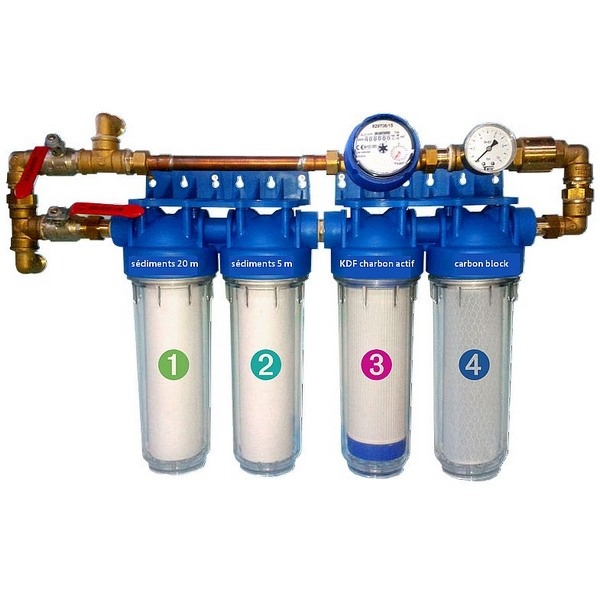

Niveau de la cuve
Capacité actuelle :
700 L / 1000 L
Volume d'eau recyclée
📅 Aujourd'hui :15 L
📈 Cette semaine :103 L
📊 Ce mois :428 L
État des filtres
Filtre 1 - Sédiments 20 m✅ OK
Filtre 2 - Sédiments 5 m⚠️ À vérifier
Filtre 3 - KDF Charbon Actif✅ OK
Filtre 4 - Carbon block⚠️ Nettoyage conseillé
Dernier entretien :14 mars 2025
